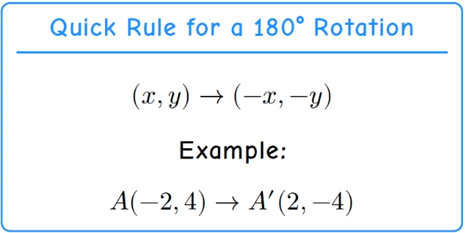
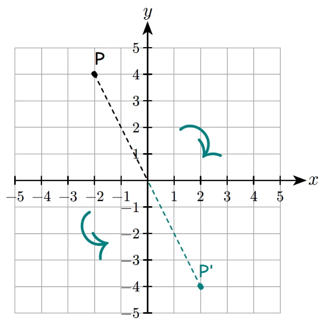
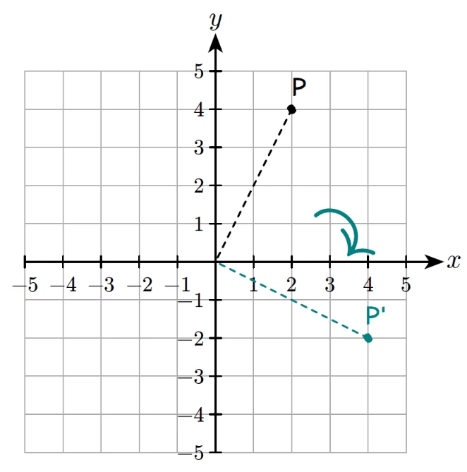
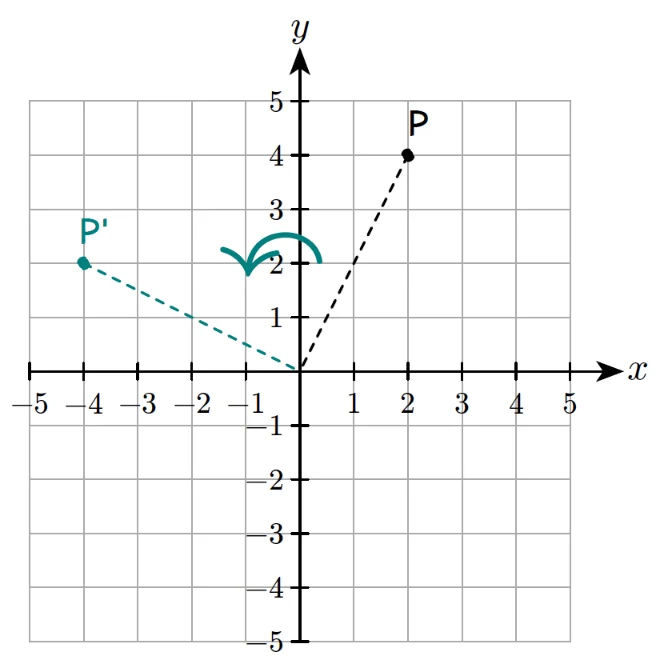

Rotation Transformation
In geometry, a transformation means changing the position, size, or direction of a shape while keeping its basic form the same.
There are four main types of transformations:
- Translation — slides a shape from one place to another without turning it. (Think: move your drawing without lifting or spinning it!)
- Reflection — flips a shape over a line to make a mirror image. (Like seeing your face in a mirror.)
- Rotation — turns a shape around a point. Turning 0° or 360° means no turn at all, and turning 180° clockwise is the same as 180° counterclockwise. (Like the hands of a clock turning around the center.)
- Dilation — makes a shape larger or smaller but keeps its proportions the same. (Like zooming in or out on a photo.)
Each transformation changes how the shape looks on the grid, but the shape itself stays the same!
Simple Transformation
In Grade 6, we learn these transformations using the origin (0, 0) or the x- and y-axes on a coordinate grid.
For rotation, we only need to learn three key angles — 90°, 180°, and 270°.
The coordinates after a translation or reflection are easier to find — we can simply count how far the point moves or flips across a line.
Why Rotation is Complex
For a rotation transformation, the movement is a turn, not a slide, so finding the rotated coordinates can be tricky.
In the classroom way, we must remember the rotation direction mapping table for clockwise and counterclockwise turns — and that can be confusing!
But don’t worry — you’ll learn a magic trick here that makes it simple.
You’ll figure it out in seconds without memorizing those confusing mappings.
We only need to know how to rotate from 0° to 180°, because rotations from 180° to 360° can be converted to the first half.
For example, a 270° clockwise rotation is the same as a 90° counterclockwise rotation, and vice versa!
Classroom Way
Now let’s first review how rotation is taught in the classroom. After that, we’ll reveal the magic trick that makes it easier!
180° rotation
This rotation is simple!
Both CW and CCW rotations are the same. We only need to change both signs of the coordinates — no switching needed.


This rotation is so simple that we do not even need a trick for it.
90° cw rotation
When we rotate a shape 90 degrees CW, each point turns a quarter turn to the right around the origin (0, 0). Think of it like the hands of a clock turning.
How to Rotate (90° CW):
- Label points in relation to the origin. Describe each point by how far it is right or left and up or down from (0, 0).
- Use the rotation direction map. The rotated point will be the same number of units from the origin, but directions change like this:
| Original Direction | Rotated Direction (90° CW) |
| Right | Down |
| Down | Left |
| Left | Up |
| Up | Right |
- Keep the same distances, switch the directions, and plot the new point.
Example:
Let’s Rotate A(2, 4).
- From the origin, A(2, 4) is 2 right and 4 up.
- Apply the map:
Right → Down: now 2 down
- Up → Right: now 4 right
- From the origin, move 4 right and 2 down → A′(4, −2).
- See the illustration on the coordinate plane.

90° ccw rotation
When we rotate a shape 90 degrees CCW, each point turns a quarter turn to the left around the origin (0, 0).
It’s simply the reverse of the clockwise turn — imagine the clock’s hands moving backward.
How to Rotate (90° CCW):
- Label points in relation to the origin. Describe each point by how far it is right or left and up or down from (0, 0).
- Use the reverse rotation direction map.A 90° counterclockwise turn is the opposite of the clockwise one — directions shift the other way around:
|
|
| Right | Up |
| Up | Left |
| Left | Down |
| Down | Right |
- Keep the same distances, but move each point according to the new directions. The figure turns to the left around the origin.
Example:
Let’s Rotate A(2, 4).
- From the origin, A(2, 4) is 2 right and 4 up.
- Apply the map:
Right → Up: now 2 up
- Up → Left: now 4 left
- From the origin, move 4 left and 2 up → A′ (-4, 2).
- See the illustration on the coordinate plane.

Summary of the classroom way
The classroom way teaches us how to rotate points step by step — by labeling directions, using the rotation map, and switching positions carefully. It helps us understand what really happens during a rotation.
However, this method can be hard to remember because we must recall different direction changes for clockwise (CW) and counterclockwise (CCW) turns. The mapping table looks simple, but keeping track of all four directions and their opposites can be confusing and easy to mix up!
That’s why we need a Trick Way — a faster and easier method to find the rotated coordinates without memorizing all those directions.